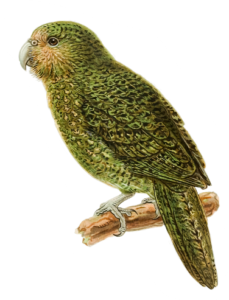
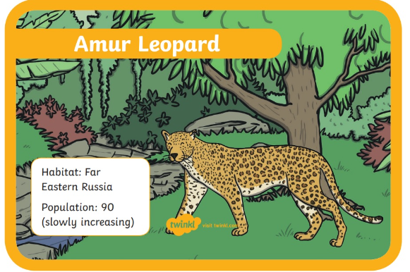

REAREST ANIMAL IN THE WORLD
The rarest animal in the world is the vaquita (Phocoena sinus). It is a kind of critically endangered porpoise that only lives in the furthest north-western corner of the Gulf of California in Mexico. There are only 18 left in the world. It is thought that they may be extinct in ten years.
The Rarest Animals in the World: Critically Endangered Animals
Animals are often rare because their populations have declined to the point of near extinction. We call this being ‘critically endangered’. Read on to find out more about some of the rarest or most critically endangered animals in the world.
VAQUITA

An adult vaquita weighs around 43 kilograms and can grow up to 1.5 metres in length. It is the smallest Cetacean, which are an order of mammals including dolphins, whales, and porpoises. Vaquita is Spanish for ‘little cow’.
Some of the potential factors of its extinction include gill nets, a type of net used in commercial fishing. Also, females often only give birth once every two years, so they are slow to replenish the population.
 for more about aquita
for more about aquita
The rarest birds in the world
Kakapo
Kakapos are a kind of large, green flightless parrot. They live in New Zealand and have become critically endangered due to humans bringing cats near to their habitat. There are around 116 adults left. They have been moved to protected areas across three small islands in New Zealand. The kakapos are all tagged and watched by conservationists to keep them safe.
Spoon-billed Sandpiper
These creatures are small wading birds, found in Southeast Asia and North-eastern Russia. They have spoon-shaped bills to help them scoop up moss, insects, shrimp, and worms. They are also known for their calls, which sound like ‘preep’ and ‘wheer’. There are fewer than 200 mature adults of this species left in the world.
for more about kakapao
The rarest cats in the world
Amur leopards
These big cats can be found in North East China or the Primorsky Krai region of Russia. There are around 90 adult Amur leopards left in the world. The beautiful fur of these leopards has made them a prime target for hunters and fur traders. However, there are efforts to increase the population in Russia.

Sumatran Tiger
The Sumatran (or Sunda) tiger is the only kind of tiger left in the Sunda islands. They used to live all over these islands, but now are only found in Sumatra. The other Greater Sunda islands include Borneo, Java and Sulawesi, and there are many lesser islands including Bali and Timor. There were other subspecies of tigers in Bali and Java, but now both are extinct. Conservationists believe there are fewer than 400 left in the wild.
for more about leopards
TAPANULI ORANGUTAN
The Tapanuli orangutan is the newly described species of orangutan, listed as a distinct species in 2017. Only a single, isolated population of Tapanuli orangutans exist in the wild, which is restricted to the tropical forests of the Batang Toru ecosystem on the island of Sumatra, Indonesia.
Today, these tree-dwelling primates are critically endangered with fewer than 800 individuals in the wild, making them the most endangered great ape species in the world. The loss of habitat is one of the main threats to its survival as tropical forests are being replaced by agriculture, mining, and hydroelectric and geothermal development. Between 1985 and 2007, over 40% of the forests in the province of North Sumatra, where the Tapanali orangutan is found, were lost.

for more about orangutans